🚂 蒸汽时代
Age of Steam · 设计：Martin Wallace · Warfrog/Winsome 原版；Deluxe Edition: Eagle-Gryphon Games 出版 · 1–6 人 · 官方英文规则书全文翻译（12 页 · AI 辅助机翻）
本页收录《蒸汽时代》（Age of Steam, 2002）的原版官方规则书全部 12 页（底本：Eagle-Gryphon Games 官方上传（BGG files），Age%20of%20Steam%20Deluxe%20English%20Rules.pdf），逐页随图排列，点击任意图片即可放大查看；每页下方默认折叠了该页的 AI 辅助中文机翻对照，需要时可展开。规则内容归 Warfrog/Winsome 原版；Deluxe Edition: Eagle-Gryphon Games 及版权方所有，收录仅供个人学习查阅。
整理说明：机翻对照按本站术语口径对齐（牌库/手牌/回合/轮/板块/指示物等），PDF 图文混排页的语序可能与原书视觉顺序略有出入；规则细节请一律以页面上方原书页面为准。
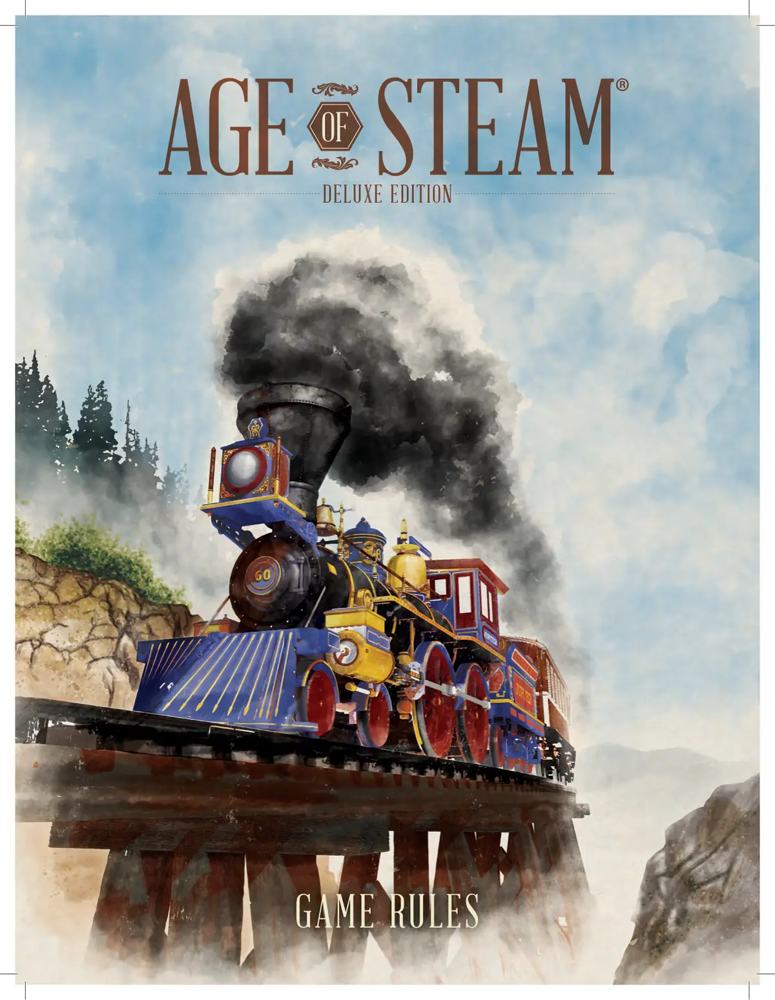
📝 第 1 页 AI 机翻对照（点击展开）
游戏规则
精华版
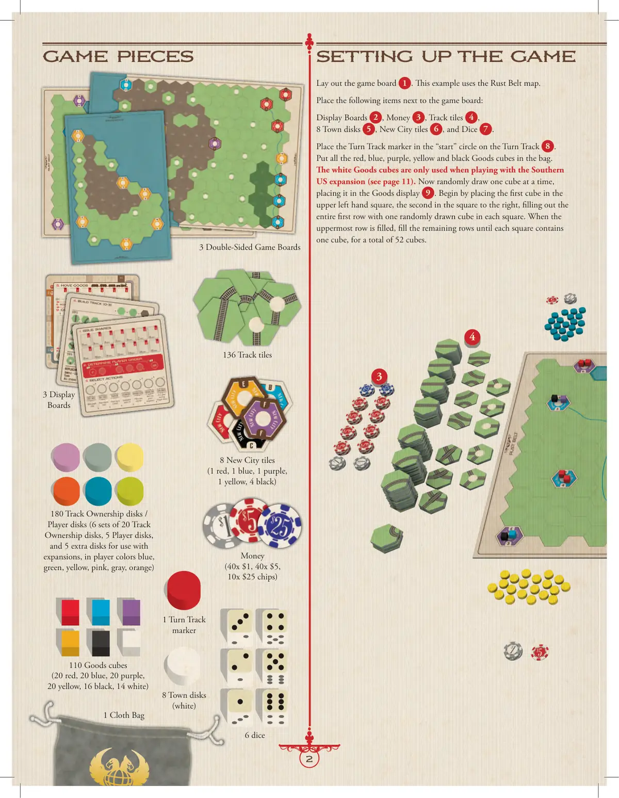
📝 第 2 页 AI 机翻对照（点击展开）
游戏配件
游戏设置
3张双面游戏版图
3张展示板
8个城镇圆盘（白色）
136个轨道板块
8个新城板块（1个红色，1个蓝色，1个紫色，1个黄色，4个黑色）
110个货物方块（20个红色，20个蓝色，20个紫色，20个黄色，16个黑色，14个白色）
180个轨道所有权圆盘/玩家圆盘（6套，每套20个轨道所有权圆盘，5个玩家圆盘，以及5个用于扩展的额外圆盘，玩家颜色为蓝色、绿色、黄色、粉色、灰色、橙色）
金钱（40张$1，40张$5，10张$25筹码）
1个回合轨道标记物
6个骰子
1个布袋
展开游戏版图1。本示例使用锈带地图。
将以下物品放在游戏版图旁边：
展示板2、金钱3、轨道板块4、8个城镇圆盘5、新城板块6和骰子7。
将回合轨道标记物放在回合轨道8的"开始"圆圈中。
将所有红色、蓝色、紫色、黄色和黑色的货物方块放入布袋中。
白色货物方块仅在玩美国南部扩展时使用（见第11页）。现在一次随机抽取一个方块，将其放入货物展示区9。首先将第一个方块放在左上角的方格中，第二个放在右侧的方格中，用随机抽取的一个方块填满整个第一行的每个方格。当最上面一行填满后，填充剩余的行，直到每个方格中都有一个方块，总共52个方块。
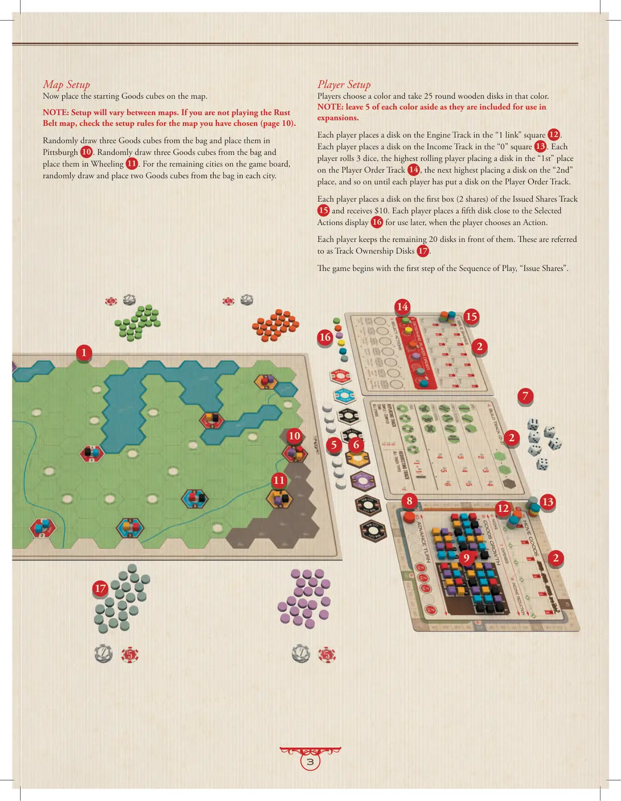
📝 第 3 页 AI 机翻对照（点击展开）
玩家设置
玩家选择一种颜色，并拿取25个该颜色的圆形木制指示物。
注意：每种颜色留下5个，因为它们包含在扩展中使用。
每位玩家在"1连接"方格12上放置一个指示物在引擎轨道上。
每位玩家在"0"方格13上放置一个指示物在收入轨道上。每位玩家掷3个骰子，点数最高的玩家在玩家顺序轨道14的"第一"位置放置一个指示物，次高的玩家在"第二"位置放置一个指示物，依此类推，直到每位玩家都在玩家顺序轨道上放置了一个指示物。
每位玩家在已发行股份轨道15的第一个格子（2股）上放置一个指示物，并获得$10。每位玩家在已选行动展示区16附近放置第五个指示物，供稍后当玩家选择行动时使用。
每位玩家保留剩余的20个指示物在面前。这些被称为轨道所有权指示物17。
游戏从游戏流程的第一步"发行股份"开始。
地图设置
现在在地图上放置起始货物方块。
注意：不同地图的设置会有所不同。如果你不是在玩锈带地图，请查看你所选择地图的设置规则（第10页）。
从袋子中随机抽取三个货物方块，并将其放置在匹兹堡10。从袋子中随机抽取三个货物方块，并将其放置在惠灵11。对于游戏板上的其余城市，从袋子中随机抽取并放置两个货物方块在每个城市中。
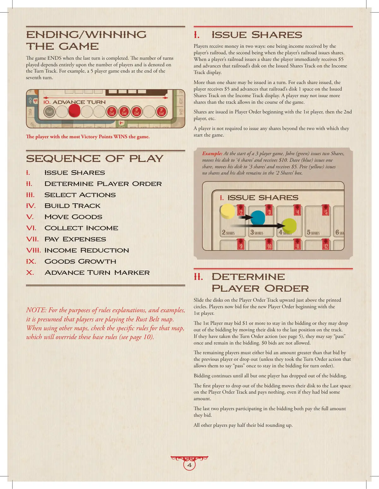
📝 第 4 页 AI 机翻对照（点击展开）
结束/获胜
游戏
当最后一个回合完成时，游戏结束。进行的回合数完全取决于玩家数量，并在回合轨道上标明。例如，5人游戏在第7个回合结束时结束。
拥有最多胜利点的玩家赢得游戏。
回合顺序
I.
发行股份
II.
确定玩家顺序
III.
选择行动
IV.
建造轨道
V.
运输货物
VI. 收入
VII. 支出
VIII. 收入减少
IX. 货物增长
X. 前进回合标记
注意：为了规则解释和示例的目的，假定玩家正在玩"铁锈带"地图。当使用其他地图时，请查看该地图的特定规则，这些规则将覆盖这些基础规则（见第10页）。
I. 发行股份
玩家通过两种方式获得金钱：一种是通过玩家的铁路获得收入，第二种是当玩家的铁路发行股份时。当玩家的铁路发行股份时，玩家立即获得5美元，并在收入轨道显示上的已发行股份轨道上推进该铁路的指示物。
一个回合内可以发行多份股份。对于每份发行的股份，玩家获得5美元，并在收入轨道显示上的已发行股份轨道上推进该铁路的指示物1格。玩家在游戏过程中发行的股份数量不能超过轨道允许的最大值。
股份按照玩家顺序发行，从第一位玩家开始，然后是第二位玩家，以此类推。
玩家不必发行超过游戏开始时拥有的两份股份之外的任何股份。
示例：在3人游戏开始时，约翰（绿色）发行了两份股份，将他的指示物移动到"4份股份"位置并获得10美元。戴夫（蓝色）发行了一份股份，将他的指示物移动到"3份股份"位置并获得5美元。皮特（黄色）没有发行股份，他的指示物保持在"2份股份"格中。
II. 确定玩家顺序
将玩家顺序轨道上的指示物向上滑动到印刷圆圈的正上方。玩家现在开始竞标新的玩家顺序，从第一位玩家开始。
第一位玩家可以出价1美元或更多以继续竞标，或者通过将他们的指示物移动到轨道上的最后位置而退出竞标。如果他们采取了回合顺序行动（见第5页），他们可以说一次"pass"并继续留在竞标中。不允许出价0美元。
其余玩家必须出价高于前一位玩家的金额，或者退出竞标（除非他们采取了回合顺序行动，允许他们说一次"pass"以保持在竞标中）。
竞标继续进行，直到除一位玩家外的所有玩家都退出了竞标。第一个退出竞标的玩家将他们的指示物移动到玩家顺序轨道上的最后位置，并且无需支付任何费用，即使他们已经出价。
参与竞标的最后两名玩家都支付他们竞标的全部金额。
所有其他玩家支付他们竞标金额的一半，向上取整。
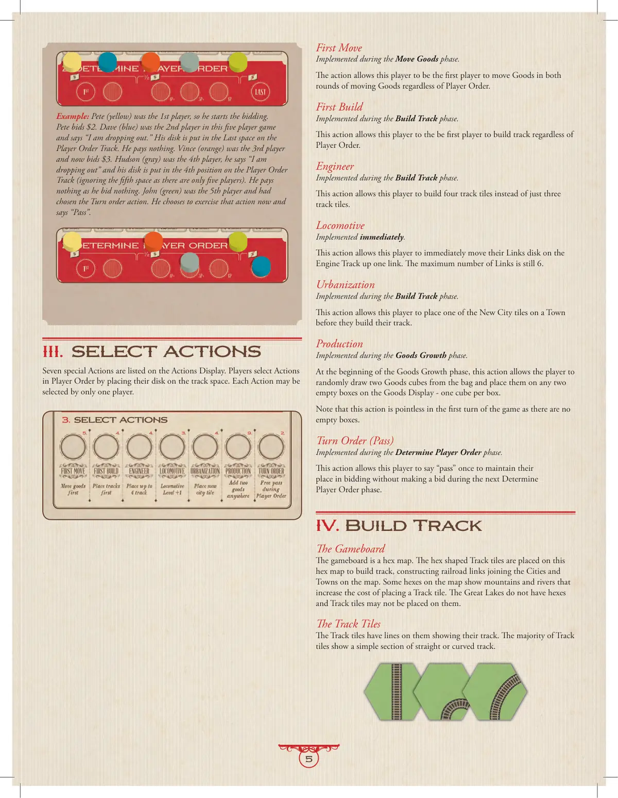
📝 第 5 页 AI 机翻对照（点击展开）
示例：皮特（黄色）是第一位玩家，所以他开始竞标。
皮特出价2美元。戴夫（蓝色）在这场五人游戏中是第二位玩家，
他说"我退出"。他的棋子被放在玩家顺序轨道的最后一个位置。
他无需支付任何费用。文斯（橙色）是第三位玩家，现在出价3美元。
哈德森（灰色）是第四位玩家，他说"我退出"，他的棋子被放在玩家顺序轨道的第四个位置
（因为只有五名玩家，所以忽略第五个位置）。他出价0，所以无需支付任何费用。
约翰（绿色）是第五位玩家，并选择了行动顺序行动。他选择现在执行该行动，并说"过"。
III. 选择行动
七个特殊行动列在行动展示板上。玩家按玩家顺序通过将棋子放在轨道格上来选择行动。
每个行动只能被一名玩家选择。
先手行动
在货物运输阶段执行。
该行动允许该玩家在货物运输的两个回合中都是第一个运输货物的玩家，无论玩家顺序如何。
先建行动
在建造轨道阶段执行。
该行动允许该玩家在建造轨道阶段中第一个建造轨道，无论玩家顺序如何。
工程师行动
在建造轨道阶段执行。
该行动允许该玩家建造四块轨道板块，而不是仅三块轨道板块。
机车行动
立即执行。
该行动允许该玩家立即将其在机车轨道上的连接棋子向上移动一个连接。连接的最大数量仍为6。
城市化行动
在建造轨道阶段执行。
该行动允许该玩家在建造轨道前，将一块新城板块放在一个城镇上。
生产行动
在货物增长阶段执行。
在货物增长阶段开始时，该行动允许玩家从袋中随机抽取两个货物方块，并将它们放在货物展示板上的任意两个空格中——每个方块一个空格。
注意，在游戏的第一回合中该行动没有意义，因为没有空格。
行动顺序（过）
在确定玩家顺序阶段执行。
该行动允许该玩家在下一个确定玩家顺序阶段中说一次"过"，以保持其在竞标中的位置，而不出价。
IV. 建造轨道
游戏版图
游戏版图是一个六边形地图。六边形轨道板块被放置在这个六边形地图上以建造轨道，构建连接地图上城市和城镇的铁路连接。地图上的一些六边形显示山脉和河流，这些会增加放置轨道板块的成本。五大湖没有六边形，轨道板块不能放置在上面。
轨道板块
轨道板块上有线条显示其轨道。大多数轨道板块显示一段简单的直线或弯曲轨道。
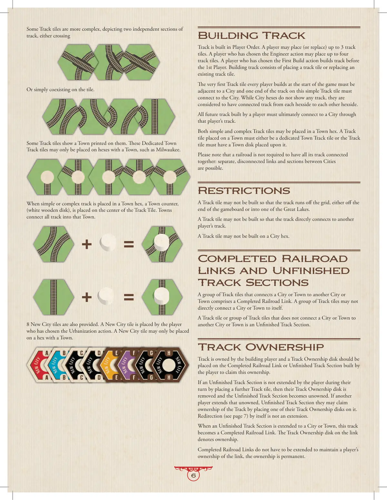
📝 第 6 页 AI 机翻对照（点击展开）
一些轨道板块更为复杂，描绘了两个独立的轨道部分，可以是交叉的，或者只是简单地共存于板块上。
一些轨道板块上印有城镇。这些专用城镇轨道板块只能放置在有城镇的六边形格上，例如密尔沃基(Milwaukee)。当简单或复杂的轨道被放置在城镇六边形格上时，一个城镇指示物（白色木制圆盘）会被放置在轨道板块的中心。城镇将所有轨道连接到该城镇。
还提供了8张新城板块。新城板块由选择城市化行动的玩家放置。新城板块只能放置在有城镇的六边形格上。
建造轨道
轨道按照玩家顺序建造。玩家可以放置（或替换）最多3张轨道板块。选择工程师行动的玩家可以放置最多4张轨道板块。选择首次建造行动的玩家在第一玩家之前建造轨道。建造轨道包括放置轨道板块或替换现有轨道板块。
每个玩家在游戏开始时建造的第一张轨道板块必须与一座城市相邻，并且这张简单轨道板块的一端必须连接到城市。虽然城市六边形格上不显示任何轨道，但它们被认为从每个六边形边到其他六边形边都有连接的轨道。玩家建造的所有未来轨道最终必须通过该玩家的轨道连接到一座城市。
简单和复杂的轨道板块都可以放置在城镇六边形格上。放置在城镇上的轨道板块必须是专用城镇轨道板块，或者必须在轨道板块上放置一个城镇指示物。
请注意，铁路不必所有轨道都连接在一起：城市之间分离的、不连接的路段和部分是可能的。
限制
轨道板块不能建造得使轨道跑出版格，即跑出版图末端或进入五大湖之一。
轨道板块不能建造得使轨道直接连接到其他玩家的轨道。
轨道板块不能建造在城市六边形格上。
完成的铁路连接
和未完成的轨道部分
连接一个城市或城镇到另一个城市或城镇的一组轨道板块构成一个完成的铁路连接。一组轨道板块不能直接将一个城市或城镇连接到它自己。
没有将一个城市或城镇连接到另一个城市或城镇的一张轨道板块或多张轨道板块是一个未完成的轨道部分。
轨道所有权
轨道由建造它的玩家拥有，玩家应在建造完成的铁路连接或未完成的轨道部分上放置轨道所有权指示物来声明所有权。
如果一个未完成的轨道部分在玩家的回合内没有被通过放置更多轨道板块来扩展，那么他们的轨道所有权指示物会被移除，未完成的轨道部分变为无主状态。如果另一个
玩家扩展那个未被拥有、未完成的轨道区段时，他们可以通过放置一个自己的轨道所有权指示物来宣称拥有该轨道。
重定向（见第7页）本身不算作扩展。
当未完成的轨道区段延伸至城市或城镇时，这条轨道就变成了一条完成的铁路连接。该连接上的轨道所有权指示物表示所有权。
完成的铁路连接不必延伸以维持玩家对该连接的所有权，所有权是永久的。
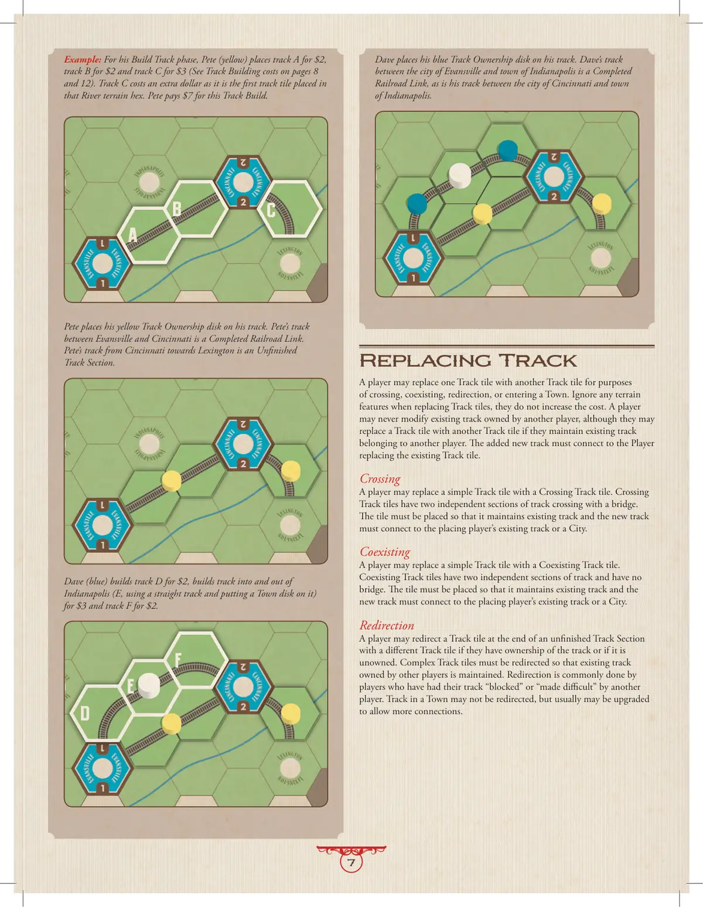
📝 第 7 页 AI 机翻对照（点击展开）
示例：在他的建设轨道阶段，皮特（黄色）花费2美元建设轨道A，花费2美元建设轨道B，花费3美元建设轨道C（参见第8页和第12页的轨道建设成本）。轨道C额外花费1美元，因为它是该地形六边形中首次放置的轨道板块。皮特为这次轨道建设支付了7美元。
皮特将他的黄色轨道所有权指示物放置在他的轨道上。皮特在埃文斯维尔和辛辛那提之间的轨道是一条已完成的铁路连接。皮特从辛辛那提通往列克星敦的轨道是一条未完成的轨道段。
戴夫（蓝色）花费2美元建设轨道D，花费3美元建设进出印第安纳波利斯的轨道（E，使用直轨道并在上面放置一个城镇指示物），花费2美元建设轨道F。
戴夫将他的蓝色轨道所有权指示物放置在他的轨道上。戴夫在城市埃文斯维尔和城镇印第安纳波利斯之间的轨道是一条已完成的铁路连接，同样，他在城市辛辛那提和城镇印第安纳波利斯之间的轨道也是一条已完成的铁路连接。
替换轨道
玩家可以为了穿越、共存、改向或进入城镇的目的，用一个轨道板块替换另一个轨道板块。替换轨道板块时忽略任何地形特征，它们不会增加成本。玩家永远不能修改其他玩家拥有的现有轨道，但如果他们保持其他玩家拥有的现有轨道，他们可以用一个轨道板块替换另一个轨道板块。新增的轨道必须连接到替换现有轨道板块的玩家。
穿越
玩家可以用一个穿越轨道板块替换一个简单轨道板块。穿越轨道板块有两个通过桥梁交叉的独立轨道段。该板块必须放置得能保持现有轨道，并且新轨道必须连接到放置玩家的现有轨道或一个城市。
共存
玩家可以用一个共存轨道板块替换一个简单轨道板块。共存轨道板块有两个独立的轨道段，没有桥梁。该板块必须放置得能保持现有轨道，并且新轨道必须连接到放置玩家的现有轨道或一个城市。
改向
如果玩家拥有该轨道或该轨道未被拥有，他们可以在未完成轨道段的末端用一个不同的轨道板块替换一个轨道板块。必须改向复杂轨道板块，以保持其他玩家拥有的现有轨道。改向通常是被其他玩家"阻挡"或"制造困难"的玩家进行的。城镇中的轨道不能改向，但通常可以升级以允许更多连接。
A
B
C
D
E
F
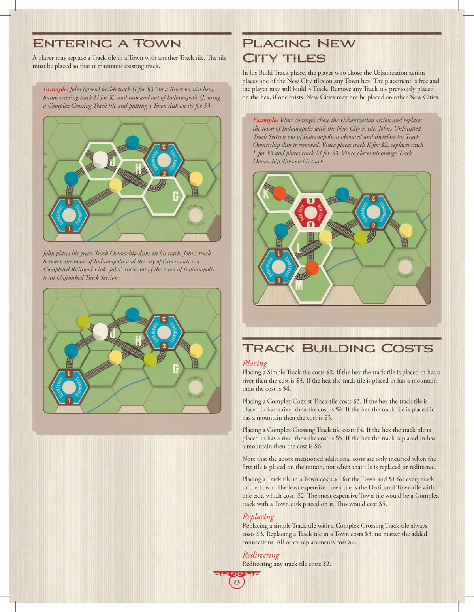
📝 第 8 页 AI 机翻对照（点击展开）
进入城镇
玩家可以用另一条轨道板块替换城镇中的轨道板块。板块必须放置成能维持现有轨道的样式。
示例：约翰（绿色）花费$3在河流地形六边形上建造轨道G，花费$3建造交叉轨道H，并花费$3进入和离开印第安纳波利斯（J，使用复杂交叉轨道板块并在其上放置城镇指示物）。
J
H
G
约翰将他的绿色轨道所有权指示物放置在他的轨道上。约翰在印第安纳波利斯镇和辛辛那提市之间的轨道是一条完成的铁路连接。约翰离开印第安纳波利斯镇的轨道是一个未完成的轨道段。
J
H
G
放置新城市板块
在建造轨道阶段，选择城市化行动的玩家可以将一个新城市板块放置在任何城镇六边形上。放置是免费的，玩家仍然可以建造3条轨道。移除之前放置在该六边形上的任何轨道板块（如果存在）。新城市不能放置在其他新城市上。
示例：文斯（橙色）选择了城市化行动，并用新城市A板块替换了印第安纳波利斯镇。约翰离开印第安纳波利斯的未完成轨道段被取消，因此他的轨道所有权指示物被移除。文斯花费$2建造轨道K，花费$3替换轨道L，花费$3建造轨道M。文斯将他的橙色轨道所有权指示物放置在他的轨道上。
K
L
M
轨道建造费用
放置
放置简单轨道板块的费用是$2。如果轨道板块放置的六边形有河流，则费用是$3。如果轨道板块放置的六边形有山脉，则费用是$4。
放置复杂共存轨道板块的费用是$3。如果轨道板块放置的六边形有河流，则费用是$4。如果轨道板块放置的六边形有山脉，则费用是$5。
放置复杂交叉轨道板块的费用是$4。如果轨道板块放置的六边形有河流，则费用是$5。如果轨道放置的六边形有山脉，则费用是$6。
注意，上述提到的额外费用只在首次在该地形上放置板块时产生，而不是在替换或重定向该板块时。
在城镇中放置轨道板块的费用是城镇$1加上每条通往城镇的轨道$1。最便宜的城镇板块是只有一个出口的专用城镇板块，费用是$2。最贵的城镇板块是带有城镇指示物的复杂轨道板块，费用是$5。
替换
用复杂交叉轨道板块替换简单轨道板块总是花费$3。替换城镇中的轨道板块花费$3，无论增加多少连接。所有其他替换花费$2。
重定向
重定向任何轨道板块花费$2。
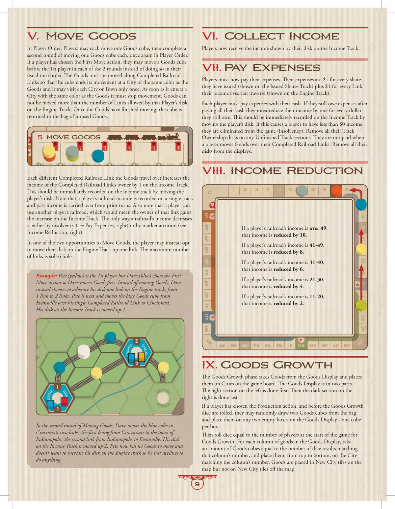
📝 第 9 页 AI 机翻对照（点击展开）
V. 移动货物
按玩家顺序，每位玩家可以各移动一个货物方块，然后完成第二轮移动一个货物方块，同样按玩家顺序进行。
如果玩家选择了"先行动"行动，他们可以在两轮中的每一轮中在第一位玩家之前移动一个货物方块，而不是在通常的回合顺序中这样做。货物必须沿着已完成的铁路连接移动，使得方块在移动结束时到达与货物同颜色的城市，并且每个城市或城镇只能访问一次。一旦货物进入与货物同颜色的城市，它必须停止移动。货物移动的距离不能超过该玩家在引擎轨道上的圆盘所允许的连接数。货物移动完成后，方块被放回未使用货物袋中。
货物所经过的每个不同的已完成的铁路连接都会使该铁路连接的所有者在收入轨道上的收入增加1。这应通过移动玩家的圆盘立即记录在收入轨道上。请注意，玩家的铁路收入记录在单一轨道上，过去的收入会从前几轮结转。另请注意，玩家可以使用其他玩家的铁路，这意味着该连接的所有者会在收入轨道上获得增加。铁路收入减少的唯一方式是通过破产（参见右侧"支付费用"）或市场衰减（参见右侧"收入减少"）。
在两次移动货物的机会中，玩家可以选择改为在引擎轨道上将其圆盘向前移动一个连接。最大连接数仍为6个连接。
示例：皮特（黄色）是第一位玩家，但戴夫（蓝色）选择了"先行动"行动，所以戴夫首先移动货物。戴夫选择不移动货物，而是在引擎轨道上将其圆盘向前移动一个连接，从1个连接到2个连接。皮特接下来将蓝色货物方块从埃文斯维尔沿着他唯一的已完成的铁路连接移动到辛辛那提。他在收入轨道上的圆盘向上移动了1。
在移动货物的第二轮中，戴夫将辛辛那提的蓝色方块移动了两个连接，第一个是从辛辛那提到印第安纳波利斯的城镇，第二个连接是从印第安纳波利斯到埃文斯维尔。他在收入轨道上的圆盘向上移动了2。皮特现在没有货物可移动，也不想增加他在引擎轨道上的圆盘，所以他只是选择不做任何事。
VI. 收集收入
玩家现在获得他们在收入轨道上圆盘所示的收入。
VII. 支付费用
玩家现在必须支付他们的费用。他们的费用是他们发行的每股股票（在已发行股票轨道上显示）的1美元，加上他们的机车可以穿越的每个连接（在引擎轨道上显示）的1美元。
每位玩家必须用现金支付费用。如果他们在支付费用后仍欠款
支付完所有现金后，他们必须根据仍欠的金额每美元减少一美元收入。这应通过移动玩家的筹码立即记录在收入轨道上。如果这导致玩家的收入低于$0，他们将被淘汰出局（破产）。移除他们在任何未完成轨道段上的所有轨道所有权筹码。当玩家将货物移过他们已完成的铁路连接时，他们不会获得报酬。从展示区中移除他们所有的筹码。
VIII. 收入减少
如果玩家的铁路收入超过49点，该收入减少10点。
如果玩家的铁路收入为41-49点，该收入减少8点。
如果玩家的铁路收入为31-40点，该收入减少6点。
如果玩家的铁路收入为21-30点，该收入减少4点。
如果玩家的铁路收入为11-20点，该收入减少2点。
IX. 货物增长
货物增长阶段将货物从货物展示区放置到游戏版图上的城市。货物展示区分为两部分。先完成左侧的浅色部分，然后完成右侧的深色部分。
如果玩家选择了生产行动，并且在货物增长骰子被投掷之前，他们可以从袋子中随机抽取两个货物方块，并将它们放置在货物展示区的任意两个空盒中——每盒一个方块。
然后，根据游戏开始时的玩家数量投掷骰子进行货物增长。对于货物展示区中的每一列货物，取与该列数字匹配的骰子结果数量的货物方块，从上到下放置在与该列数字匹配的城市上。货物被放置在地图上的新城板块上，但不被放置在地图外的新城板块上。
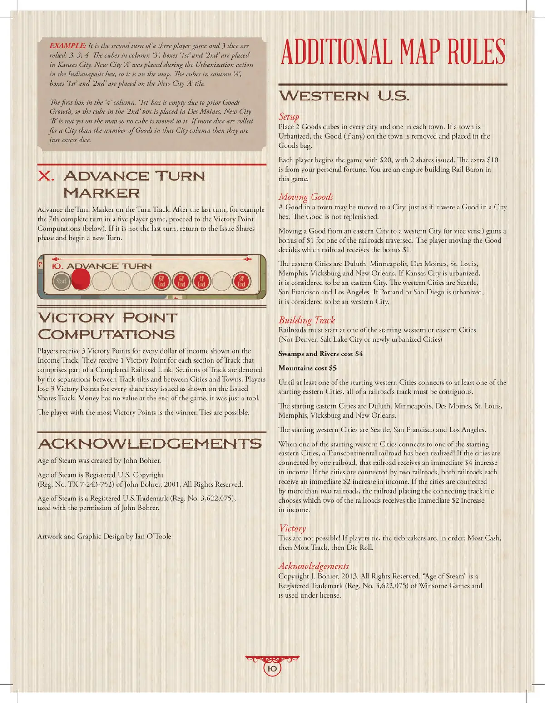
📝 第 10 页 AI 机翻对照（点击展开）
示例：在一个三人游戏中是第二个回合，掷出了3个骰子：3、3、4。'3'列中，'1st'和'2nd'方格的指示物被放置在堪萨斯城。新城市'A'是在印第安纳波利斯六边形的城市化行动期间放置的，所以它已在版图上。'A'列中，'1st'和'2nd'方格的指示物被放置在新城市'A'板块上。
'4'列的第一个方格，即'1st'方格由于先前的货物增长而为空，因此'2nd'方格的指示物被放置得梅因。新城市'B'尚未在版图上，因此没有指示物被移动到那里。如果一个城市的骰子数量超过了该城市列中的货物数量，那么多余的骰子就被忽略。
X. 前进回合标记
在回合轨道上前进回合标记。在最后一个回合之后，例如在五人游戏中的第7个完整回合之后， proceed to the Victory Point Computations (below)。如果这不是最后一个回合，则返回到发行股份阶段并开始一个新回合。
胜利点计算
玩家根据收入轨道上显示的收入金额获得3个胜利点。他们对于构成完整铁路连接的轨道的每个部分获得1个胜利点。轨道部分由板块之间的分隔以及城市和城镇之间的分隔表示。玩家根据发行股份轨道上显示的已发行股份数量，每份股份失去3个胜利点。金钱在游戏结束时没有价值，它只是一种工具。拥有最多胜利点的玩家是获胜者。平局是可能的。
致谢
蒸汽时代(Age of Steam)由John Bohrer创建。
蒸汽时代(Age of Steam)是John Bohrer于2001年注册的美国版权(登记号TX 7-243-752)，保留所有权利。
蒸汽时代(Age of Steam)是John Bohrer注册的美国商标(登记号3,622,075)，经John Bohrer许可使用。
美术与平面设计由Ian O'Toole完成
美国西部
设置
在每个城市放置2个货物指示物，在每个城镇放置1个。如果一个城镇被城市化，城镇上的货物（如果有）被移除并放入货物袋中。
每个玩家开始游戏时拥有$20，发行了2份股份。额外的$10来自你的个人财富。在这个游戏中，你是一位帝国建设的铁路大亨(Rail Baron)。
移动货物
城镇中的货物可以移动到城市，就像城市六边形中的货物一样。货物不会得到补充。
将货物从东部城市移动到西部城市（或反之亦然）会使所经过的其中一条铁路获得$1的奖励。移动货物的玩家决定哪条铁路获得这$1的奖励。
东部城市是德卢斯(Duluth)、明尼阿波利斯(Minneapolis)、得梅因(Des Moines)、圣路易斯(St. Louis)、孟菲斯(Memphis)、维克斯堡(Vicksburg)和新奥尔良(New Orleans)。如果堪萨斯城(Kansas City)被城市化，它被视为东部城市。西部城市是西雅图(Seattle)、旧金山(San Francisco)和洛杉矶(Los Angeles)。如果波特兰(Portland)或圣地亚哥(San Diego)被城市化，它被视为西部城市。
建造轨道
铁路必须始于西部或东部的起始城市之一
（不是丹佛、盐湖城或新城市化的城市）
沼泽和河流花费$4
山脉花费$5
直到至少一个西部起始城市连接到至少一个东部起始城市，一条铁路的所有轨道必须是连续的。
东部起始城市是杜鲁斯、明尼阿波利斯、得梅因、圣路易斯、孟菲斯、维克斯堡和新奥尔良。
西部起始城市是西雅图、旧金山和洛杉矶。
当一个西部起始城市连接到一个东部起始城市时，一条横贯大陆的铁路就实现了！如果这些城市由一条铁路连接，该铁路立即获得$4的收入增加。如果这些城市由两条铁路连接，两条铁路各获得$2的收入增加。如果这些城市由超过两条铁路连接，放置连接轨道板块的铁路选择哪两条铁路获得$2的收入增加。
胜利
平局是不可能的！如果玩家平局，按顺序的平局判定规则是：最多现金，然后最多轨道，然后掷骰子。
致谢
版权 J. Bohrer，2013。保留所有权利。"Age of Steam" 是 Winsome Games 的注册商标（注册号 3,622,075），并获得许可使用。
额外地图规则
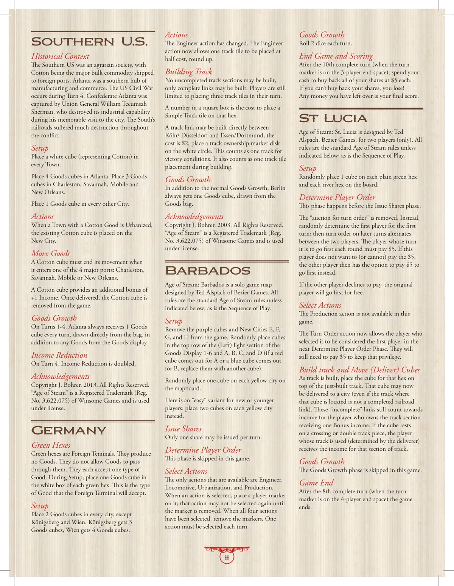
📝 第 11 页 AI 机翻对照（点击展开）
美国南部
历史背景
美国南部是一个农业社会，棉花是运往外国港口的主要大宗商品。亚特兰大是南部制造业和商业的中心。美国内战发生在第4回合。联盟军将军威廉·特库姆塞·谢尔曼占领了邦联的亚特兰大，在他那次著名的城市之行中摧毁了其工业能力。南方的铁路在整个冲突中遭受了严重破坏。
设置
在每个城镇放置一个白色方块（代表棉花）。
在亚特兰大放置4个货物方块。在查尔斯顿、萨凡纳、莫比尔和新奥尔良各放置3个货物方块。
在每个其他城市放置1个货物方块。
行动
当一个有棉花货物的城镇被城市化时，现有的棉花方块被放置在新城市上。
移动货物
棉花方块在进入4个主要港口之一时必须结束其移动：查尔斯顿、萨凡纳、莫比尔或新奥尔良。
棉花方块提供+1收入的额外奖励。一旦送达，棉花方块从游戏中移除。
货物增长
在第1-4回合，亚特兰大除了货物展示区的任何货物外，每回合还会从袋中直接获得1个货物方块。
收入减少
在第4回合，收入减少翻倍。
致谢
版权 J. Bohrer，2013。保留所有权利。
"蒸汽时代"是 Winsome Games 的注册商标（注册号 3,622,075），经授权使用。
德国
绿色六边形
绿色六边形是外国终点站。它们不产生货物。它们不允许货物穿过它们。每个终点站接受一种类型的货物。在设置时，在每个绿色六边形的白色方框中放置一个货物方块。这是外国终点站将接受的货物类型。
设置
在每个城市放置2个货物方块，但柯尼斯堡和维也纳除外。柯尼斯堡获得3个货物方块，维也纳获得4个货物方块。
行动
工程师行动已更改。工程师行动现在允许以半价（向上取整）放置一段轨道。
建造轨道
只能建造完整的连接段，不能建造未完成的轨道段。玩家仍然限制在其回合内放置三个轨道板块。
方框中的数字是在该六边形上放置简单轨道板块的成本。
可以在科隆/杜塞尔多夫和埃森/多特蒙德之间直接建造轨道连接，成本为$2，在白色圆圈上放置一个轨道所有权标记盘。这算作一个用于胜利条件的轨道。在建造期间，这也算作一个轨道板块放置。
货物增长
除了正常的货物增长外，柏林总是从货物袋中获得一个货物方块。
致谢
版权 J. Bohrer，2003。保留所有权利。
"蒸汽时代"是 Winsome Games 的注册商标（注册号 3,622,075），经授权使用。
巴巴多斯
Age of Steam: Barbados 是一个单人游戏地图
由 Bezier Games 的 Ted Alspach 设计。所有规则均为标准《蒸汽时代》规则，除非下文另有说明；行动顺序也是如此。
设置
从游戏中移除紫色方块和新城 E、F、G 和 H。在货物展示区 1-6 和 A、B、C、D 的（左侧）浅色区域顶行随机放置方块（如果 A 出现红色方块或 B 出现蓝色方块，则用另一个方块替换）。在地图板上的每个黄色城市上随机放置一个方块。
这里有一个给新玩家或年轻玩家的"简单"变体：在每个黄色城市上放置两个方块。
发行股份
每回合最多只能发行一股。
确定玩家顺序
在本游戏中跳过此阶段。
选择行动
可用的行动只有工程师、火车、城市化和生产。当选择一个行动时，在其上放置一个玩家标记；在标记被移除前，该行动不能再次被选择。当所有四个行动都被选择后，移除标记。每回合必须选择一个行动。
货物增长
每回合掷 2 个骰子。
游戏结束与计分
在第 10 个完整回合结束后（当回合标记在 3 人局结束格上时），花费你的现金以每股 5 美元的价格买回你所有的股份。如果你无法买回你的股份，你就输了！你剩余的任何钱都是你的最终得分。
St Lucia
《蒸汽时代：圣卢西亚》由 Ted Alspach 为 Bezier Games 设计，仅供两人游戏。所有规则均为标准《蒸汽时代》规则，除非下文另有说明；行动顺序也是如此。
设置
在地图上的每个普通绿色六边形和河流六边形上随机放置 1 个方块。
确定玩家顺序
此阶段发生在发行股份阶段之前。"竞标回合顺序"被移除。相反，随机确定第一回合的第一位玩家；之后回合的顺序在两位玩家之间交替。每回合必须先行动的玩家需支付 5 美元。如果该玩家不想（或无法）支付 5 美元，另一位玩家则有选择支付 5 美元优先行动的权利。
如果另一位玩家拒绝支付，原玩家将免费优先行动。
选择行动
在本游戏中，生产行动不可用。
回合顺序行动现在允许选择它的玩家在下一个确定玩家顺序阶段被视为第一位玩家。他们仍需支付 5 美元以保持这一特权。
建设轨道和移动（运送）方块
随着轨道的建设，将该六边形的方块放置在刚刚建好的轨道上。该方块现在可以被运送到一个城市（即使该方块所在轨道不是一条完整的铁路连接）。这些"不完整"的连接仍然计入拥有该轨道段的玩家的收入，并获得额外收入。如果方块停留在
在十字路口或双轨板块上，使用该轨道的玩家（由运送者决定）获得该段轨道的收入。
货物增长
在本游戏中跳过货物增长阶段。
游戏结束
在第8个完整回合后（当回合标记位于4人端格时），游戏结束。
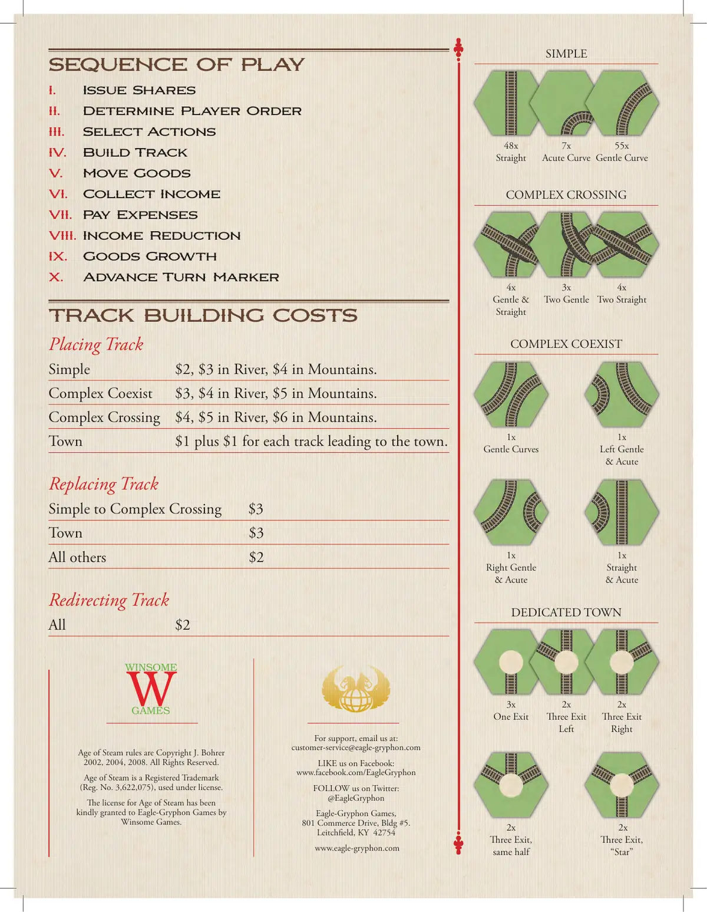
📝 第 12 页 AI 机翻对照（点击展开）
游戏流程顺序
I.
发行股份
II.
确定玩家顺序
III.
选择行动
IV.
建造轨道
V.
运输货物
VI.
收取收入
VII.
支付开支
VIII.
收入减少
IX.
货物增长
X.
前进回合标记
轨道建造费用
放置轨道
简单
$2，河内$3，山脉内$4。
复杂共存
$3，河内$4，山脉内$5。
复杂交叉
$4，河内$5，山脉内$6。
城镇
$1加上每条通往城镇的轨道$1。
替换轨道
简单到复杂交叉
$3
城镇
$3
所有其他
$2
改向轨道
所有
$2
蒸汽时代规则版权归J. Bohrer所有
2002, 2004, 2008。保留所有权利。
蒸汽时代是注册商标
（注册号 3,622,075），经许可使用。
蒸汽时代的许可由Winsome Games
慷慨授予Eagle-Gryphon Games。
如需支持，请发送邮件至：
customer-service@eagle-gryphon.com
在Facebook上关注我们：
www.facebook.com/EagleGryphon
在Twitter上关注我们：
@EagleGryphon
Eagle-Gryphon Games，
801 Commerce Drive, Bldg #5.
Leitchfield, KY 42754
www.eagle-gryphon.com
简单
复杂交叉
复杂共存
专用城镇
1x
左缓坡
& 急弯
1x
右缓坡
& 急弯
1x
直道
& 急弯
1x
缓弯
3x
单出口
2x
三出口左
2x
三出口右
2x
三出口，
同侧
2x
三出口，
"星形"
4x
缓坡
& 直道
48x
直道
7x
急弯
55x
缓弯
3x
双缓坡
4x
双直道